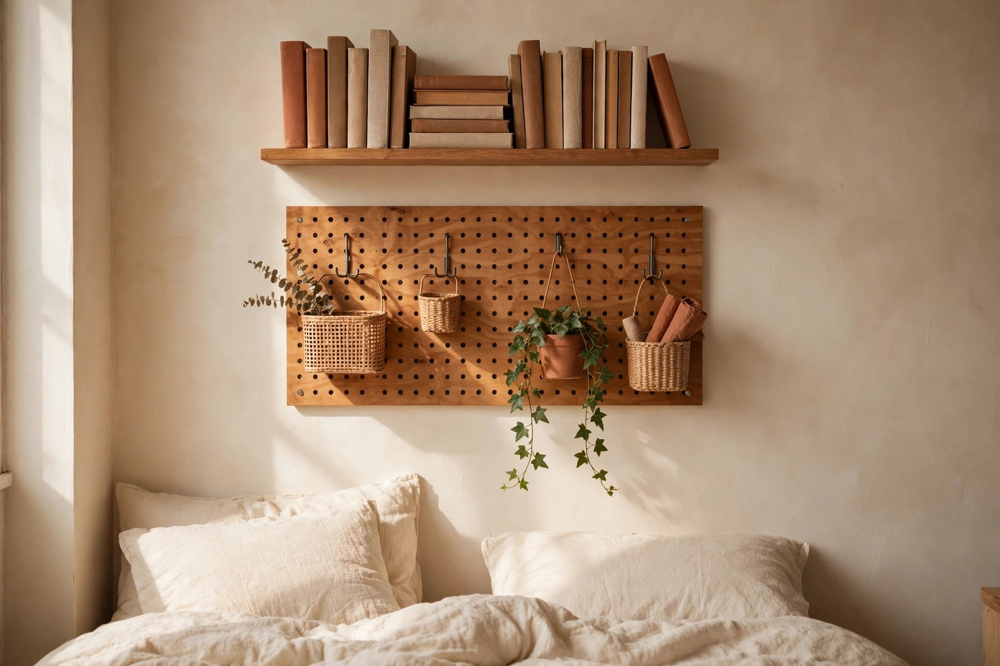

Small Bedroom
Small Bedroom Wall Storage Ideas: Use the Walls, Not the Floor
Intro
In a small bedroom, the floor is precious — every square metre has a job. The walls, on the other hand, are mostly empty. Above the bed, beside the door, behind the headboard: metres of wall space doing nothing. Wall storage uses that space, so the floor stays clear and the room feels bigger.
This guide has 12 wall storage ideas for small bedrooms. Most cost $5–$25, most are renter-friendly with adhesive hooks or rails, and none of them takes a single centimetre of floor.

Before you buy anything, look at your walls with fresh eyes. The strip above the headboard, the wall beside the wardrobe, the back of the door and the space above the door are all storage waiting to happen. Measure the empty wall space first — a 60 cm rail or a 40 cm shelf is easy to find, but only if you know the width you have to work with.
1. A pegboard above the bed — $15–$25
A pegboard above the headboard holds hooks, small shelves and baskets. Hang jewellery, hats, a small plant and tomorrow's outfit. Move the hooks any time — the pegboard changes with you. Keep it above pillow height so nothing falls on you at night.
2. A floating shelf above the headboard — $10–$15
One long floating shelf above the bed holds books, a plant and a photo frame. It replaces a nightstand on one side, and it takes no floor space. If you rent, use adhesive brackets rated for 5 kg and keep the load light.
3. A rail with hooks beside the door — $8–$12
A wall rail with 5 hooks beside the door holds tomorrow's clothes, a bag and a scarf. It stops clothes landing on the chair, and it takes 5 minutes to put up with adhesive hooks. One rail, five hooks, no floor space.
4. Hanging baskets on the wall — $10–$15
Two or three wire or woven baskets hung on wall hooks hold socks, scarves, chargers and small things. They are open, so you can see what is inside, and they use the wall beside the wardrobe that is otherwise empty.
5. A picture ledge for books — $8–$12
A narrow picture ledge, 10 cm deep, holds books standing upright like a shelf — but it sticks out only 10 cm. Put one above the desk or beside the bed. Books on a ledge look like decor, not storage.
6. A wall-mounted jewellery organiser — $8–$12
A small framed organiser with hooks and a mirror hangs on the wall and holds necklaces, earrings and watches. It replaces a jewellery box on the dresser, and the mirror is useful too. One frame, two jobs.
7. Hooks on the back of the door — $5–$8
The back of the bedroom door is a whole wall of storage. An over-door hook rail holds bags, robes and tomorrow's outfit. It costs about $5, takes no wall space at all, and comes off in seconds.
8. A wall file holder for papers — $8–$12
A wall-mounted file holder beside the desk holds letters, bills and notebooks. Papers on a desk pile up; papers on a wall stay sorted. Three pockets are enough — inbox, to do, to file.
9. A shelf above the door — $10–$15
The space above the door is the most wasted space in any room. A shelf there holds boxes of out-of-season clothes or extra bedding. You need a step stool to reach it, which is exactly why it suits things you use twice a year.
10. A hanging shoe rack on the wall — $10–$15
A fabric shoe rack with pockets hangs on the wall inside the wardrobe or beside the door. It holds shoes, but also chargers, cables and small accessories. Clear pockets mean you can see everything at a glance.
11. A magnetic strip for small metal things — $5–$8
A magnetic strip on the wall holds bobby pins, tweezers, small scissors and keys. Tiny metal things are the ones that always go missing, and a strip keeps them in one visible place. Stick it inside the wardrobe door if you want it hidden.
12. A wall-mounted reading light + shelf — $12–$18
A clip-on or wall-mounted reading light with a small shelf underneath combines light and storage. The shelf holds a book and a phone, the light means no lamp on the nightstand, and the wall does both jobs at once.
Conclusion
Wall storage is the easiest way to gain space in a small bedroom, because the walls are already there and already empty. Start with one rail or one shelf, load it with the things that pile up on the floor, and watch the floor clear. The room will feel bigger the same day.
Budget recap
- Pegboard: ~$20
- Floating shelf: ~$12
- Rail with hooks: ~$10
- Hanging baskets: ~$12
- **Total for a full wall-storage setup: ~$54 — and the floor stays clear.**
Pinterest pin titles (3 fresh pins, same article, different designs)
- ""Small Bedroom Wall Storage Ideas — Use the Walls, Not the Floor""
- ""12 Wall Storage Ideas That Free Your Bedroom Floor""
- ""No Floor Space? Put It on the Wall — 12 Ideas""